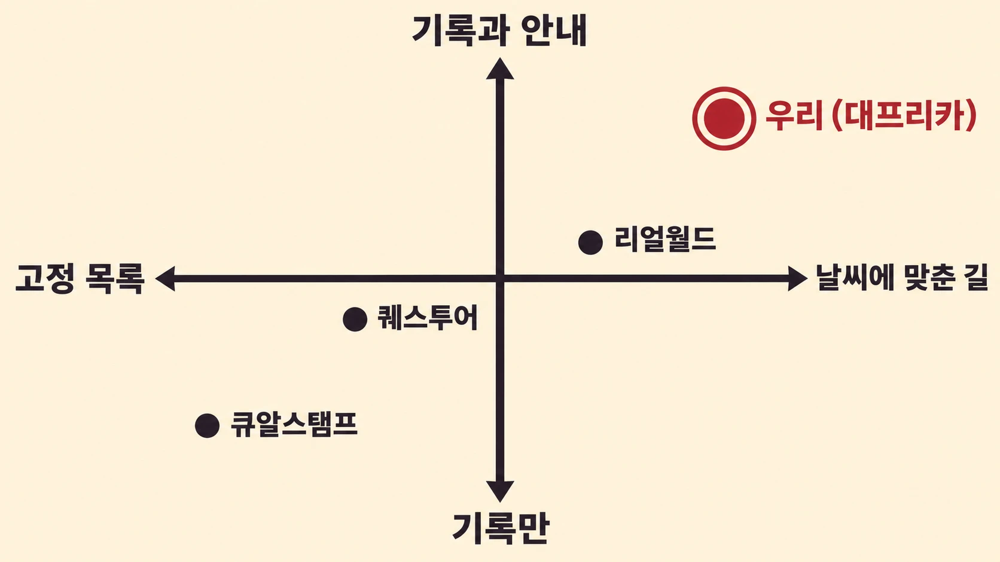
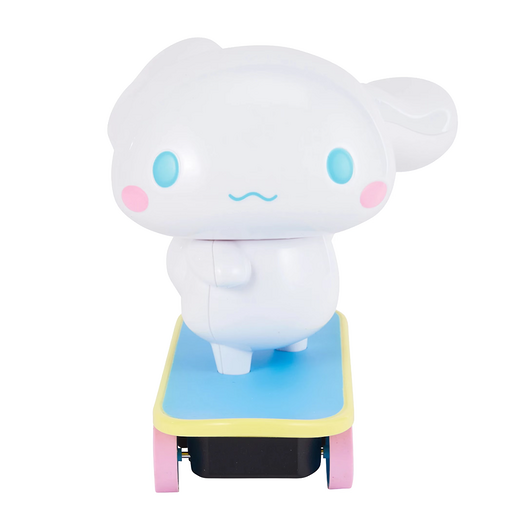

날씨에 맞춰 길을 바꿔 주는 여름 도심 투어
🍎 문제 → 해결 → 시장 → 사업 모델 → MVP → 팀 → 요청
🛠️ 11/13 이후 정한 것과 만든 화면을 각 장 안에서 함께 보입니다.
25.5℃
전국 여름 평년은 23.7℃입니다.
서문야시장 한 곳의 지도 리뷰 3건
19.6%
오후 6시 이후에도 운영하는 곳은 235곳입니다.
24시간 운영은 5곳입니다.
기온·체감, 시간대, 요일, 위치
야외 가능 여부와 모드를 규칙으로 정함
검수된 장소 목록에서 고름
하랑이가 오늘 길을 안내
날씨가 바뀌었어요. 남은 길을 바꿀까요?
[길 바꾸기] [이대로 가기]
| 결정 | 지금 방식 |
|---|---|
| 🍎 도장 = 미션 완료 | 장소마다 미션을 마치면 능금 도장 1개, 한 코스는 도장 3개입니다. |
| 📍 인증 = GPS + 미션 | GPS로 도착을 확인한 뒤 미션을 마쳐야 방문 인증이 끝납니다. |
| 🚶 코스 = 장소 3곳 | 첫 코스는 중구 근대골목 걷기(C01) 3곳입니다. |
진행 중인 여행이 있으면
경고창을 보고 새로 시작합니다.
MVP는 중구만 안내합니다.
중구 밖이면 "지금은 중구만 안내해요"라고 말합니다.
장부에 앨범을 더하고,
주머니는 홈에서 따로 엽니다.
오늘 페이지는 홈의 장부입니다.
| 도구 | 주로 하는 일 | 시작 가격 (회사 공개, VAT 별도) |
|---|---|---|
| 큐알스탬프 | QR·NFC·GPS 인증, 리워드 게임, 100% 맞춤 제작 | 정액 플랜 100만 원~ |
| 이벤터스 | 행사 플랫폼 안의 QR 스탬프 | 행사 개설 베이직 무료 |
| 퀘스투어 | 셀프·맞춤 미션, QR·GPS, 상권 리포트 | Starter 30만 원~ |
| 리얼월드 | AI 스토리 분기, 대화형 NPC, 실시간 콘텐츠 변경 | 공개 설명 페이지만 확인 (직접 플레이 못 함) |
✅ 위 네 곳 모두 날씨에 따라 길을 바꾸는 기능은 공개 자료에서 찾지 못함 (검색 범위 안)
✅ 2026 스탬프투어: 대구 전역 관광지 20곳, 4주 (대구문화예술진흥원)
⏳ 2026 상반기 대구 방문자 6.0% 증가 (대구 전체). 중구 방문객 수와 예산 규모는 집계 기준 확인 중

지자체 발주 한 건 단위로 기획·제작
정해진 기간 동안 운영과 정보 갱신
중구에서 시작하고, 다른 구·군은 가정
| 비용 항목 | 근거 상태 |
|---|---|
| 제작 공수 (코스 1건) | 가정 40시간 (근거 없음) |
| 인건비 단가 | 2026 최저임금 10,320원 (미검증) |
| 클라우드 (서버·호스팅) | Supabase Pro 5/월, Vercel Pro 0/월 (공식 요금) |
⚠️ 견적 단가와 운영 기간은 아직 근거가 없습니다.
중구 파일럿에서 실제 견적과 비용을 확인합니다.
개발
🤖 Claude Code · 🤖 ChatGPT

프롬프트 설계·UI 목업
🤖 Claude Code · 🤖 ChatGPT
캐릭터 디자인
🤖 ChatGPT
리서치·사실 검증
🤖 Claude Code · 🤖 ChatGPT · 🤖 Gemini
영상·시각 콘텐츠
🤖 Google Flow · 🤖 Google AI Studio
커밋
143건
PR
84건
중구 근대골목 코스의 운영 정보를 함께 확인해 줄 담당 부서가 필요합니다.